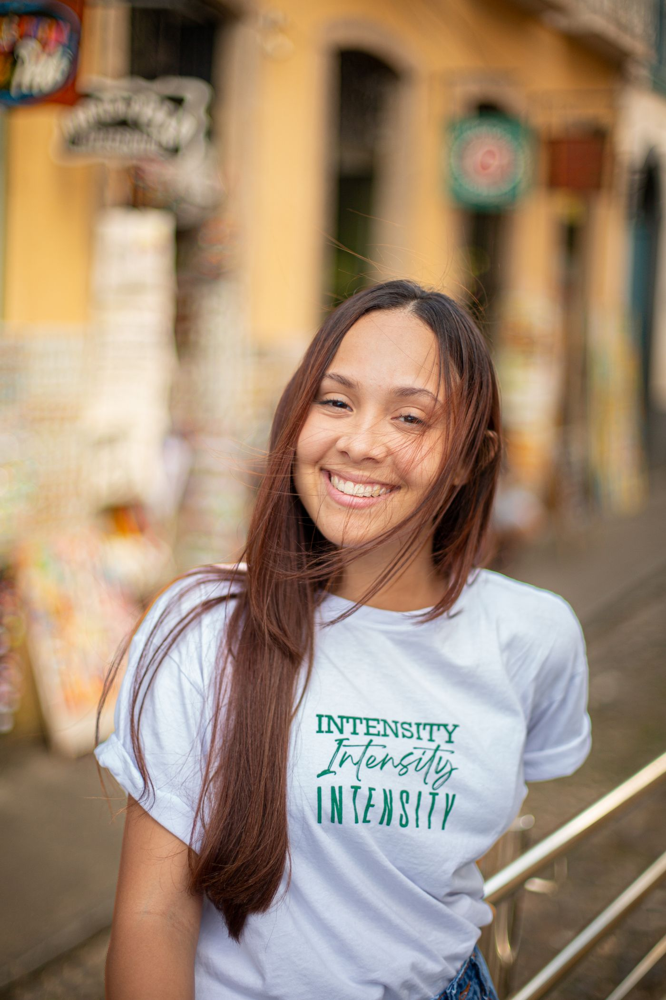
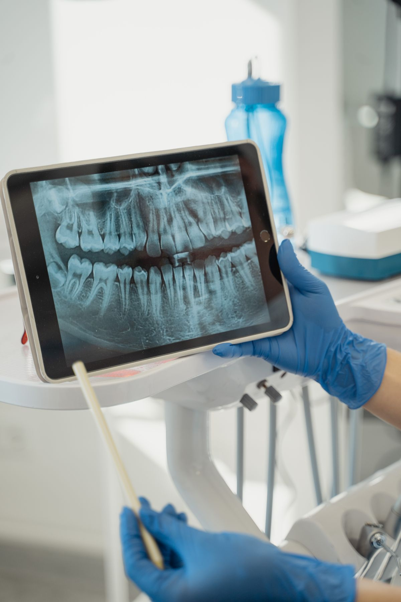

Dra. Rani, no Amarante
Seu sorriso.Seu espaço.
Cuidado odontológico que começa com uma boa conversa. Um espaço para ouvir você e cuidar do que faz você sorrir.
Veja a distância até a clínica

Mais cuidado.
Mais motivos para sorrir.
O que trouxe
você até aqui?
Cada sorriso tem uma história.
Escolha por onde quer começar a sua conversa.
Vamos cuidar da sua saúde bucal.
Uma avaliação para entender seu sorriso e conversar sobre o cuidado de que você precisa.
- Conte o que está sentindo
- Entenda os próximos passos

Com a Dra. Rani
O cuidado começa
quando você se sente
à vontade.
Você conta o que precisa. A gente escuta, conversa e explica os próximos passos do seu atendimento.
Da primeira mensagem à consulta, o Espaço Sorriso é o seu ponto de encontro com o cuidado odontológico no Amarante.
Conheça a Dra. Rani@dra.rani_dentistaComece a conversa
Conte o que precisa pelo WhatsApp.
Combine sua consulta
Consulte os horários com a clínica.
Venha ao Espaço Sorriso
Estamos na Av. Benedito Santana.
Amarante, RN
O seu sorriso
tem endereço.
Av. Benedito Santana
Amarante, São Gonçalo do Amarante – RN
CEP 59296-515
Veja o quanto
estamos perto.
Distância aproximada em linha reta
O navegador pedirá sua permissão. O cálculo acontece aqui, no seu dispositivo.
Abrir rota no Google MapsO ponto no mapa é aproximado pelo CEP. Confirme a referência exata da clínica pelo WhatsApp.
Ficou alguma
dúvida?
A conversa continua no WhatsApp.
Aqui estão algumas respostas para começar.
Como agendo minha consulta?
Toque em “Agendar pelo WhatsApp”, conte o que precisa e combine um horário diretamente com a clínica.
Preciso ativar a localização para ver o mapa?
Você pode consultar o endereço e abrir a rota sem ativar a localização. A permissão é solicitada apenas quando você escolhe calcular sua distância.
A distância mostra o percurso de carro?
O cálculo mostra a distância em linha reta até a referência do endereço. Para conferir o percurso de carro, a pé ou de transporte público, abra a rota no Google Maps.
Posso tirar dúvidas antes de agendar?
Sim. Fale com a clínica pelo WhatsApp para perguntar sobre horários, atendimento e sua consulta. A indicação de tratamento depende de uma avaliação odontológica.
Seu próximo sorriso começa aqui.